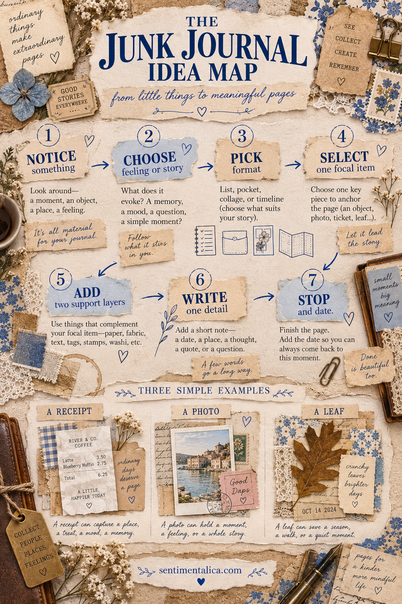

The easiest way to find junk journal ideas is to stop searching for finished pages and begin with one thing you have noticed. A good idea grows through a sequence: object, feeling, format, focal point, support, words and an ending.

1. Notice something
Begin with what is already close: a receipt, photograph, leaf, phrase, color or small event. Do not ask whether it is important enough.
2. Choose the feeling or story
Ask what the item evokes. A café receipt might mean comfort, independence or a conversation. The emotional answer is more useful than the object category.
3. Pick a format
Match the story to a structure. Use a list for many small details, a pocket for privacy, a collage for atmosphere or a timeline for change.
4. Select one focal item
Choose the object that can carry the page at a glance. Give it the clearest position and strongest contrast.
5. Add two support layers
One can provide context and one can provide texture. A map plus fabric, handwriting plus tissue, or packaging plus book paper is enough.
6. Write one detail
Record a date, place, sentence, question or sensory clue. A few accurate words create more meaning than a long generic paragraph.
7. Stop and date
The process map needs an ending. Date the page before the urge to decorate every remaining space takes over.
Three quick examples
A receipt can become a café memory with a brown paper layer and one sentence overheard. A photo can become a place page with a map fragment and the weather. A leaf can become a seasonal page with fabric and the route of your walk.
When you feel stuck, return to “notice.” The world supplies the raw material; the map simply helps you turn it into a page.
Use constraints to generate more ideas
A blank invitation to “make anything” can feel harder than a small rule. Try one object plus one color, one photograph plus one sentence, or one pocket holding three related scraps. A constraint removes hundreds of irrelevant decisions.
You can run the same object through different branches of the map. A train ticket could become a timeline of the journey, a pocket holding observations, a color study of the landscape or a list of what you saw through the window. The object does not contain one correct page.
Keep an idea parking place at the back of the journal. Write only the starting object and possible feeling: “blue receipt—quiet afternoon,” “leaf—first cold walk,” “postcard—place I want to return.” When it is time to make, choose one line and continue through the map.
If an idea stops feeling interesting halfway through, move backward one step. Change the format rather than throwing away the subject. A collage that feels forced may want to become a list; a long story may want to become a hidden note.